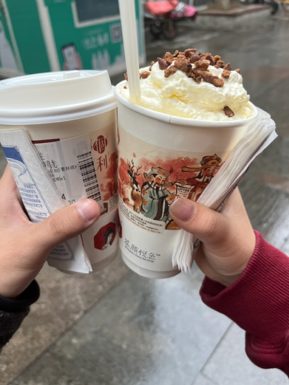

恋爱日记
2023/2/20
今天是礼物到达日！嘻嘻。然然收到了天天为然然挑选的小熊香水，闻起来还是很不错。不过然然说味道很像天天用的大吉岭茶😂，那然然闻惯了这个味道之后天天不就对然然没有吸引力了吗😨。
天天也收到了然然的零食投喂，非常的丰盛！有麦片、薯片、肉肉、蔬菜······更惊喜的是，居然这还不是全部，还有三四样没有到达，哇啊啊啊啊！✌️
说实话，我真的很想念我的然然，我好想和她呆在一起。不过我也明白，我们都在为了以后的幸福一起努力。并肩奔跑，便是十分幸福的事啦，相比于一辈子的幸福，这些分隔又算什么呢。
加油然然，加油天天！

2023/2/19
然然，我还是好想你啊，你根本不知道我有多想念你。我多想闪现到你的身边，在一个周末，天天出现在你的校园门口。我真的好想你。
我真的好想，永远和你在一起。不论任何困难，不管发生什么。然然，我爱你！
2022/12/14
然儿，还在生病呢……
我的小可爱，明明那么乖，却要忍受病痛的难受😣，而我却还在远方，真的只能默默心疼。然然，真的很棒的，咱们一定会开始好转起来，一定会重新恢复成那个活蹦乱跳的然宝！在这难受的感冒期间，老公将会一直陪在你的身边……
六个月了，乖乖，没想到我们在一起半年的纪念日，会是在这样的情况下到来。宝贝，老公多想在你身旁，抱紧你，让然然钻进老公温暖安稳的怀抱。想给然然盖好被子，端来冒着热气的莲花清瘟药，想擦干宝贝脸上的汗水与泪滴，给宝贝耳边送来安慰与鼓励。
我想你了，亲爱的。六个月来，我的然然和我一起，在异地的爱情道路上分别坚持着自己的长跑。你的委屈，你的开心，你的难过，你的爱，天天都有看见的，都有记住的。六个月来，我们或许都会有迷茫与孤独，但在此之外，我们有更多更多的美好、期待、陪伴与爱。六个月来，我们已经在不知不觉间，习惯了有对方的日子，我们已经成为了对方生活的一部分，以一个越来越合适，越来越和谐的姿态。而我们对对方的爱，更是从未因为时间的推移而有丝毫减少，反而在一天又一天一起走过的日子中，为我们的爱注入了新的含义。
半年了，这个半年，将会是我们人生中幸福的开端；这个半年，也是天天至今最美好的日子。无数个夜晚，想起有你，我的心里无比地安心、满足，有时甚至不敢相信这是天天真实的生活！想起这半年来我们一起经历的一切，从那个夜晚牵起手开始，我们一起走过成都的大街小巷，一起在云南体验异乡风情，一起笑着往嘴里塞满美食，一起爬山一起拍照，在西双版纳的星光里闲庭信步，手牵着手，仿佛与夜市的喧闹隔绝，眼中便只有你啊。我们在深夜长谈，轻轻的低语中含满了柔情，我们一起面对他人的来与去，一起坚强面对他人的误会，坚定地，温柔地，排解着对方的难受与伤心。我们一起争吵，一起调皮地挖坑、跳坑、又填上。假装丢掉，又悄悄地把对方，捡回家里，捧在心上。我们体验七夕的浪漫与美好，经历爱情的酸甜苦辣，感受过双人同行的日子后，便再也不愿意一人生活。无论遇到任何事情，都会向对方倾诉，再大的困难也从不害怕，因为我们都知道，有那么一个人，一直坚定地支持着自己。
从半年前的那一刻起，天天的生活便仿佛被一盏灯点亮。
然然……我想你，我爱你❤️。
愿以后的每一个半年，我的灯光，永不熄灭，我的然然，永远在我身旁。
2022/12/3
今天白天，天天一直在写数学写作业，还有编程的作业，到晚上还有好多好多。然然一直都陪着天天，一直耐心，一直安慰天天，真的很感动。晚上天天还想在床上写作业，但是然然看到天天已经累的不行，坚持让天天睡觉觉。把天天抱在怀里，天天就可以什么也不想什么也不用担心。忘记繁多的作业，享受然然怀里的温暖与安心。天天睡着后，然然也没有挂电话，一直陪着天天。真的好安心好幸福，宝贝！
2022/12/2
今天，fbx的男友一直没有回她的消息，天天和然然还没有往不好的方向去想。可是下午就收到'前女友'的消息，得知那个男生的出轨行为。真的很令人震惊，不敢相信，而且很恶心。之前装的如此如此温柔深情，实际上背地里却在做着这样的事。嘴上说的话和内心所想，竟是如此的天差地别，真的很恐怖。也难怪宝贝会担心会害怕，这种人确实是拉低了男生的平均水平，真的太不幸了。真心，不但没有换来真心，反而是背叛抛弃与轻视，真的会很伤心很伤心。
宝贝，我一定要保护好你，不要让你受一点点小委屈宝贝。爱你！
2022/11/28
今天上午，然然只有一节课，天天上高数和计算机，下午还有两节课，真的好累。
下午，天天还是有些不开心，但是然然正在睡觉，我真的好希望然然能陪在我的身边，安慰天天呀啊啊啊。
然然醒来后，却说自己刚刚做了噩梦：梦里天天真的很坏，和别的女生出去玩，还抛下然然不管，让然然一个人伤心。然然肯定会很难受啊，但是天天怎么可能会这个样子，宝宝，我多希望你能够安心，不想你做这样的噩梦，真的对不起呀宝宝！
之后，天天撒娇娇，然然也一直耐心地陪着天天，鼓励天天。就算天天再怎么难过，觉得自己不好，然然也从没有一丝不耐烦，而是一直在天天身边鼓励天天相信自己。真的很感动宝宝，幸好有你，我可以在难过疲惫时，什么都不想，依靠在你的怀里，做一会儿小宝贝。
2022/11/20
今天白天时，然然有一些不开心，因为觉得学校的生活真的没有意思，可能一时间有些迷茫沮丧，觉得什么都没有意思。幸好然然有给天天讲，让天天可以来安慰小然照顾小然。宝贝，我肯定能够理解你的心情，真的很心疼我的宝贝。幸好幸好不久之后，小然就开心起来了，看到小然恢复过来，天天也松了一大口气，你真的是我的傻宝宝呀！
晚上天天出去吃了黄记煌，说好要给然然买外卖，却不知道买什么，只能买鲍师傅的甜品，就算不是很想吃也可以当早餐或者分给室友嘻嘻嘻。小然下次想吃什么都可以告诉老公的！没关系哒！！！
2022/11/19
今天晚上，然然和天天一直在打电话发消息，但是然然或许因为有些担心，纠结，有一些心事。
但是天天却因为自己的感受而忽略的然然，自己小小脾气，还让然然觉得凶凶了，简直没有把我的然然照顾好。幸好及时哄了小然然，然然也理解了天天，和天天互相交流了感受。天天也深刻的认识到了自己的问题，然然只是希望天天一直安慰着然然陪伴着然然，无论如何，都要让然然安心。
2022/11/18
今天早上天天参加了物理学会年会的开幕式，结果根本听不懂哈哈哈。晚上天天要上习题课，但是上课有段时间真的心里闷闷的有些难受，幸好天天及时告诉了小然。小然知道后一直在安慰天天，还给天天买了惊喜奶茶，让天天想到然然就难受不下去嘻嘻嘻。
下课后，宝贝马上就跑到楼下来和天天打电话，真的让天天好感动好安心。我是多么需要你，多么想听听然然的安慰与鼓励，只要有你在，其他的困难又算的了什么呢？天天会想很多以后，会焦虑会挫败，但是然然将一直不变地陪伴在天天身边，相信着天天。
好温暖，好幸福啊宝贝，幸好我的生活里有你！然然还让天天去玩游戏放松一下，结果天天老公一下子就玩的太久，让然然有些小失望，确实是天天做的不对。我一定会做的更好，老婆这么相信我，我怎么能辜负她的期待与信任？！我会努力变成更好的天天，纵使现状不够令人满意，但是我将不停地努力。纵使偶尔会难受怀疑，我也一直有你陪伴在身旁。
2022/11/13
好想小然啊啊啊啊
今天天天中午有点不舒服，也是然然在安慰天天，好开心！
2022/11/12
今天下午天天要考数学期中考试，赴考之前然然一直安慰害怕的天天，给天天加油打气。可是不争气的天天依然没有考好，都是因为天天学的不够努力不够好。但是然然知道后并没有批评天天，反而安慰天天，给天天买了喜欢的汉堡，真的让天天好安心好温暖。然然和天天要一起更加努力地学习才行呢，这样我们才能变得越来越好越来越好呀。
下午然然也一直在学习物理，看书钻研自己不太熟悉的刚体运动，看得好辛苦。天天想安慰看书烦躁的小然，却没有安慰好，反而让小然觉得我在自己开心没有照顾小然的感受，让小然然生气气啦，真的是天天做的不够好。
晚上然然去参加了新媒体的会议，无聊地持续到九点过。天天在外面跑步，去健身房锻炼，天天真的太瘦啦，要多吃点东西多锻炼，才能变成强强的天天呢。
天天还收到了java课程的期末项目作业，开始构思并着手学习GUI的swing实现。之前一直没能学进去的复杂内容，今天居然被天天克服了，直接理解到了原理，并逐渐深入。然然在此过程也一直陪着天天，给天天加油，分享天天的喜悦，真的好温暖好开心。
宝贝，多幸福有你，多美好和你在一起！
2022/11/11
今天早上天天去了运动会开幕式，然然上午上了两节课。下午然然的班会挪到了晚上，去听老师的讲座，刚好还有新媒体的拍照任务。
晚上听讲座时，因为有拍照，所以然然就坐到了前面，没有带手机。天天一直都找不到然然哈哈哈，找不到老婆啦呜呜呜呜呜呜呜呜呜呜。宝贝求抱抱呜呜呜。
2022/11/7
今天然然学校70周年校庆，所以不上课，可以好好休息一下啦。中午然然告诉天天想吃蛋糕，于是天天就去找了好多蛋糕哈哈，终于找到个还算合适的芝士蛋糕，然然收到后觉得很开心很喜欢，天天超级满足啦嘻嘻嘻。
2022/11/6
今天上午天天报名去了航模社的飞行体验活动，在学校上体验了非常喜欢的飞机。然然昨晚休息得很晚啦，早上就多补一会儿觉。
下午天天因为玩游戏没有准时兑现承诺而惹然然生气了，天天确实认识到了自己的问题，以后要做得更合适才行。宝贝不要觉得天天是在画🫓好不好呀，其实天天也一直在做一个说到做到的人呢，或许有时确实有问题，但是天天一定是真心对你好，而且要尽全力做到。
…才不是什么大饼男主😭。
异地恋确实很辛苦呢，我真的好想见你啊然然。其实见一面真的没有那么麻烦的啦，宝贝，我真的不想让我的宝贝受委屈屈。再难，我们也可以克服也可以越来越好，越来越幸福的！宝贝！加油！我爱你。
真的爱你。
2022/11/4
早上的早八思政课天天又睡过头了，还好有然然叫醒天天。
今天然然化了淡妆，还穿了新的可爱长裙和新的鞋子，真的好美，就像仙女一样耶。
2022/11/3
今天天天和然然的课都不多，但是然然下午有新媒体的工作要做。明明很困很累，然然却还要去太阳底下给他们录志愿者视频，真的超级辛苦呢。
然宝还闻到天天的香水，特别开心，哪知道天天这个傻瓜一开始还有点小醋醋。
晚上，然然和天天睡前在一起聊天，一起回忆过去两个人的感动，真的超级开心超级怀念。遇到你真的好开心好幸福！我们真的是绝配啦，一定是的！
2022/11/2
可能是淋了雨的缘故，天天的眼睛突然又开始痒痛，不小心一揉就痛的不行。幸好我的身边有然然，会安慰天天，还二话不说给天天买了消炎眼药水，居然还有惊喜！！！然然自己给自己买东西都那么节约，却给天天买东西一点都不纠结，真的好幸福！老婆我好爱你呀！！！
2022/10/30
早上起来，喉咙又是剧痛，感觉每一次呼吸都像是刀刮过黏膜，淤积的毒液更是浸润着伤口，天天的感冒还是没有好起来，然然呢，我的然然呢······
昨晚没有吃东西，早上肚子好饿，还好有然然，二话不说就帮老公买了早餐，真的好幸福呀！！天天不仅病情没有好转，作业也要到期了，只能在今天忍着病痛赶作业，然然也一直在安慰天天，陪着天天一起加油。看着然然心疼的目光，听着她的安慰，天天心里真的舒服多啦！要是没有你，我真的会好孤独好无助呀！
下午老公又开始饿了，然然说天天想吃什么都可以吃，天天好开心，直接点了pizza！吃着老婆给自己买的披萨，似乎一切病痛都已经消失啦，好开心好幸福，真的好感动！
2022/10/29
生病的时候，更加发现自己真的好需要你，在身体难受到极点时，周围的人没有义务去照顾你帮助你，只有我的然然，无微不至地陪伴着我，照顾着我，你就是我的精神支柱，真的好幸福！
然然知道天天喉咙特别难受后，又去美团上买了润喉糖，缓解喉咙不适真的好有效！简直太需要啦！晚上然然给天天开通了关联QQ‘耶耶耶耶耶好开心好开心！嘻嘻嘻嘻嘻嘻。嘻嘻嘻。嘻嘻。
2022/10/28
今天早上起床，猛的想起还没有和然然和好，打开手机最后一条消息依旧是“先冷静几天”。想发些什么，却又不知道如何开口，迷迷糊糊开始洗澡，脑子里却全是天天和然然。难道真的要几天不说话？这是不是所谓的冷战呢？可是我们明明说好不冷战的！没有小然，总是缺了些什么，不行不行不行，还是要找她。她有没有消气呢，以前从来没有说要冷静几天，这次会不会真的很难过很生气，她会原谅我吗？最终还是下定决心主动发消息找你，上床后却没想到然然已经给天天发了消息啦。
“天天老公”。只看这一句，内心无数无数的纠缠烦乱与不安都足以消散，心里欣喜释然而又感动，竟鼻头一酸好想哭。我的然然回来了呀！
下午，天天发现有些不舒服，似乎是感冒的症状，也不奇怪，天天的一个室友确实最近有感冒，或许被传染了吧。接近晚上，天天的症状越来越严重，喉咙痛的不行，头也开始阵痛，胸口总觉得闷闷的，呼吸都不舒服。告诉然然后，然然也特别心疼特别关心，还给天天在美团上买了药（还有小惊喜），让天天在难受之中感受到了来自然儿的温暖，真的谢谢老婆啦！
晚上睡觉时，天天也特别难受，无论如何不能睡着。幸好我的然然一直陪在天天身边，哄着天天看着天天，让我闭着眼也能觉得特别安心。不知过了多久，总算是睡着了，然然在我睡着后才挂掉电话，还一直嘱咐天天照顾天天，真的，让天天，特别感动啊啊啊啊啊。我爱你然儿，幸好有你！
2022/10/27
今天又是寻常的周四，然然和天天一直相互陪伴着，真的特别幸福。可是晚上睡觉时，天天和然然打了视频，因为天天说错了一句话，让然然特别难过特别伤心，开始怀疑以后的生活。天天本是无心如此，却让然然难过，自己也百口莫辩，真的也很难受。天天真的想让然然多一些安全感，和天天在一起可以完全相信我。可是有时做的事情，却是在让然然担心难过。天天一定会一心为了然儿好的，完全不需要怀疑，我也理解然然当时的想法，确实然然也会很委屈，会很失望，不过这真的不是天天的本心。晚上，我们都很伤心，不想再说话。然然说让我们冷静几天，真的让天天特别不知所措。我怎么能放任然然一个人难过？冷静几天实在是太长了，我真的好害怕。害怕我们变得不好，害怕然然离开我。
一个人睡觉，总是难以入眠，眼泪会默默地流，手机对面的然然，我却不能去寻找。
2022/10/23
昨天晚上犯了大错惹然然生气了，但是然然今天还是没有嫌弃天天，真的超级开心。上午天天出去外面录了视频，还和然然打了电话，但是然然好像不是很开心，天天也没有能给然然买到美味呜呜呜。下午回来后，和然然一起休息了一会儿，天天就被叫起来去看社团了。但是天天和然然打电话的时候，没有考虑好然然的情况，让然然不开心心了，真的很难过。虽然当时咱们都不开心，但是然然几秒之后就来找了天天，真的超级安心！宝贝，明明自己那么难过却还是来找天天原谅天天，真的谢谢你，我好心疼啊！宝贝，我真的不想让你难过不想让你伤心，呜呜呜想做你最好的天天。
晚上天天先从晚会溜了出来，却错过了爸爸的视频，好难过好自责！但是然然一直在安慰天天，陪着天天，鼓励天天肯定天天，让我真的好受好多！宝贝，我好需要你，我好喜欢被你肯定被你鼓励！谢谢有你呀，不管有什么困难，咱们一起面对！一定！
2022/10/22
今天然然早上起来就开始化美美的妆容啦，原来是下午要出门逛街啊啊啊！宝贝中午吃了期待了好久的烤肉，吃的饱饱的就是乖乖！然后天天在商场买了一杯咖啡给然然，还让然然找了半天哈哈，下次买的时候还是多了解下位置。下午，然然在商场里逛街，看了好多好看的好玩的东西，还买到了一双超级可爱超级乖的小白鞋子，还便宜又舒服，真是捡到宝啦！小然今天玩的超级开心，天天就也好开心！
但是晚上呜呜呜呜天天和然然却有了不愉快的经历。然然专门跑下楼来给天天打电话，结果天天刚好有一些小小的事情，让然然感觉很生气没有好好和小然讲话。更严重的是，天天没有察觉到然然生气的那么严重，还嬉皮笑脸地去逗小然开心。明明昨天才被小然说过不喜欢这样，结果今天就又犯了！！！天天意识到后瞬间超级后悔，毕竟才和小然说好要改变的地方立马又让小然难受了，简直在消磨爱人的信任。宝贝，我真的知道自己做的不对，真的知道错啦。只是有时改变确实可能不能够那么快，让然然失望啦······
然后宝贝生气后，根本不想和天天讲话。很理解宝贝讨厌天天失望气愤的心情。但是宝贝说了好多好多伤心的话，真的好伤心呜呜呜。宝贝，以后再生气都不要说那样的话好吗，呜呜呜呜呜呜好不好。说好永远在一起的，不要因为天天有时傻傻的犯了错误就抛下我好吗，我好害怕啊宝贝。
但是宝贝在挂了电话后立马就又来找了天天，担心天天来安慰天天。我真的好···感动啊啊啊啊！！！！要是然然不来安慰我，估计我真的会超级难受。我好需要你呜呜呜，怕被最爱的人抛弃。
谢谢你，一直陪着我，和我一起克服各种困难。我真的好爱你，然然，真的好爱你！我们一起变得更好，好吗？
2022/10/20
今天上午早八课，然然好认真地听了物理，真的超级棒棒！获得了一个乖乖币哦耶耶耶耶耶！下午没有课程，然然休息了好久，真的乖乖！昨晚睡的那么晚，就是要好好休息才能够补足我们的精力呢！
但是中午晚上然然吃的饭都很难吃，没有吃到美味，天天本来说好要给然然点好吃的来补偿，结果却忘记了这件事情！！！啊啊啊啊啊啊啊真的好对不起小然！幸好然然超级乖乖，明明不好吃还让自己吃饱饱了，至少摄入了足够的能量，以后不能再让然然受这样的委屈屈啦！！
2022/10/19
准备实行乖乖币奖励后，天天发现好像缺那么一个地方来有效记录动态变化的乖乖币。
网页或许是一个办法，但是天天感觉没有什么新意，然然可能会觉得很无聊，所以天天打算尝试一下微信小程序。小程序开发和网页差不太远，但是要复杂一些，离开了github的服务器支持，天天只能暂时使用微信的云服务，同时解决了线上数据库的问题。然后就是各种查资料理解小程序框架下的各部分代码，浅浅学习了一下wxml、wxss页面编辑语言，再利用之前的和新学习的javascript知识，总算还是把极其简单的乖乖币小程序成功上线！以后然然就可以在微信直接查看自己的余额啦嘻嘻嘻嘻嘻嘻。希望小然不要觉得这个礼物无聊聊哈哈哈哈哈哈哈啊哈！
2022/10/17
周一啦！又上课了呢！早上然然和天天一起上数学课，听的超认真呢！一想到此时此刻然然也在另一个地方听着高等数学，天天就超级开心超级有动力呢！第二节课然然有空就写了数学作业，真的很努力呢，又不会的问题也问了天天，天天虽然艰难但是也最终解出来了哈哈哈，天天也觉得学到了很多呢！
中午睡觉时，天天和然然一起开了视频。哇！！！！然然好美！！！！！！我们一起睡午觉，互相亲亲，真的感觉亲不够！！！不想闭眼不想挂电话呀呜呜呜呜呜呜呜呜呜呜。我们一起休息一起睡觉，好温暖好幸福！
2022/10/16
又过去了一个周末，这个周末，然然和天天都有好多作业要完成。我们相约在一起，同时写各自的作业，感觉十分有动力十分有效率嘻嘻嘻！然然遇到不会的问题可以问天天，天天在努力解决的同时可以帮然然理清背后的思路，同时也可以提升天天那本来就不高的数学水平，真的非常不错呀！！！我们一起写作业的时候，都感觉不到疲惫与繁多，真的超级满足超级开心耶！然然也非常棒，在学习上一直在努力，同时也把自己照顾的好好的，让天天特别欣慰。明天就又要开始新的一周的学习啦！加油宝贝！大学本来就不轻松啦，我们会在努力中学到许多新的知识！一起加油，宝贝！
2022/10/14
今天，又是我们的月纪念日呢！不知不觉，已经四个月过去了，不禁感慨一下。这四个月来，我们互相理解、互相支持、互相鼓励、互相爱着对方，陪伴对方走过人生中重要的日子，真的是、特别幸福特别感动。是你让我体会到了人生还有这样的美好，所以，我们要一起努力，让这美好成为永恒！
四个月了，然然，辛苦啦！谢谢你在这四个月中的付出与帮助、陪伴与理解，然然真的做得超级棒超级棒！天天正爱然然越来越深呢！加油，路还长，在此后的时间，我们也要继续努力，继续陪在对方身旁！
今天下午然然收到了天天的披萨大套餐，终于吃了饱饱的晚饭；天天也收到了小然送的新品果茶，超级超级喜欢！今天是纪念日啊！感谢对方的小礼物，感谢对方，从远方传来的，真心。
2022/10/12
今天上午，天天和然然一起上课，非常辛苦，但是互相鼓励，真的超级幸福。天天还收到了一条陌生的短信，以为是诈骗，结果是然然的玩笑哈哈哈哈。晚上然然和天天还一起视频直播上了计算机晚自习，帮助小然完成麻烦的计算机作业。
晚上，天天的室友在叫自己的时候叫了"天天"，然然听到后很伤心很难受。天天真的很对不起啦，小然，以后不许其他人叫我天天了，我永远，只是你的天天呀啊！宝贝，不要讨厌天好吗，今天确实是我的问题。宝贝······
2022/10/11
今天是忙碌而充实的一天，然然和天天上课都很辛苦，但是都坚持下来了。然然还被布置了一天就要交的语文作文，手头还有英语演讲，所以真的很累。但是还有天天呢！天天可以帮小然一起分析一起完成，可以给出建议，然然也可以鼓励天天帮助天天，我们都在对方最需要的时刻，给予最有效的支持与帮助，就会一起变得更好。小然，一路的辛苦，我们都不会害怕的！我永远在你身边，宝贝。
2022/10/10
又是一个周一啦，天天和然然都要开始上学了。天天早上本来有早八，结果七点给小然发完消息后就昏倒在床上了，醒来时看到已经是八点半，天天心都凉了。天天马上给然然发消息，幸好然然一直陪着天天鼓励着天天，结果天天趁着中途休息溜进教室，还签了到交了作业，一点问题也没有，还听到了自己想听的内容，那些没有听到的天天也预习过了，没有什么问题，真是有惊无险啊啊啊！
然然在数学课上也听了好多，虽然有没太听懂的，但是也没有什么大问题，课下也会再去消化。在语文课上，然然写了好多好多数学作业，遇到不懂的也和天天一起讨论，真的特别特别棒！宝贝加油，也不用太累累哦，可以适当休息一下没关系哒！
今天下午，天天和然然因为一件小事情而有了矛盾，又因为没有及时沟通而让双方都有些伤心。正当天天十分难受时，然然还是打了电话过来，两个人互相诉说了自己内心的委屈，结果发现大家都没有错，只是双方知道的信息不一样而已。所以咱们说开了，就又和好如初了。天天今天确实有问题，然然也有一些问题。但是我们从不怕犯错，只要能够沟通，我们一定可以解决困难！宝贝，真的谢谢你，谢谢你愿意，一次又一次，与我走得如此坚定。宝贝，真的很感动，很感动。
2022/10/8
今天早上，然然终于可以睡懒觉啦！天天和然然都是睡到自然醒，真的好舒服！宝贝一起床就来找天天，天天也一直陪着然然，好棒呀好棒呀！然后天天洗个澡就要出门赶作业啦，然然呢，今天可以放松一下啦！
今天的重头戏当然是：
天天超级爱心大礼包for然然啊啊啊啊啊啊！！！下午就可以到啦！可是天天这里显示到达，却一直没有给然然发消息，真是让人等得好着急呀哈哈哈。不过然然也不能太期待啦，虽然天天准备了很久，其实也不会太好啦，然然不许失望望哦哈哈哈哈哈。不着急宝贝，应该很快就会到啦！
哦耶耶耶耶耶耶耶宝贝收到大礼包啦！看到宝贝喜欢天天就真的好开心好满足！亲爱的一定要一直开心心哦，天天永远陪着你哒，一直守护着你，宝贝，咱们继续加油呀！
2022/10/7
昨晚奋斗了一晚上，终于把网站给升级啦，做得更好看啦！！！宝贝也特别喜欢，真的是太棒啦！看到宝贝开心心喜欢欢的时候，我真的好开心好开心！然后，然宝和天天打了电话，在深夜真的超级幸福。抬头一望，又是一轮明月，洒着清光，将天然包裹在同一片皎洁中，何尝不是一种浪漫。
有你这样的老婆真幸福！我们的爱情，真的超级棒！
2022/10/6
今天天天早早地（相对）就起了床，因为今天终于可以寄出天天的
爱心大礼包！准备了一个多月，终于可以让然然收到啦，天天今天也好激动好激动的！整整一大箱礼物，希望然然收到会超开心，那天天就满足啦！
寄完件后天天去图书馆写了好久好久的作业，然然也一早就有课，下午还要听讲座。
中午宝贝回到宿舍，已经累累了，于是在天天的叽里呱啦之下，宝贝就美美地进入了梦乡，天天真的超级开心超级喜欢我的宝贝。
下午然然整个宿舍都起床晚了，天天给然然点了咖啡，然然去取了之后讲座就迟到没有位置了，然然只能打道回府啦。最尴尬的是！天天这次选的咖啡一点也不好喝哈哈哈哈哈哈哈，算是天天失算了。
傍晚，天天和然然打了好久电话，真的特别开心心！可是之后，由于天天没有及时说出自己内心的想法，然然也没能察觉到，导致咱俩之间出现了一些小矛盾，但是这种矛盾又很不同：咱们各自的矛头都是指向自己的，而非对方，真的其实很幸福的。可是之后天天因为然然不想说话而多想了，还写了一些不合适的话，当时傻傻的天天真的以为然然要丢下自己，超级难受受呢！
但是过了一小会儿，天天也相信然然一定会回来的，因为每次然然平静下来之后，都是会回来找天天的，所以这次也一定一样。当然然再次说出那句“天天”的时候，冷冰冰的文字中，我又看见了然然热情的爱，一瞬间：放心、开心、感动、感谢爆发出来，大家也终于走出了烦乱的思绪，回到了对方身边。
其实，其他烦恼的一切，哪有那么吓人，唯有我们永远不变的爱，胜过一切。事后我们都特别感动，也理性地分析了一下自己的问题，才发现天天其实处理问题时也有很多不妥。所以，天天光有炽热的爱是不够的，如何将其真正落到实处真正化作然然的幸福将是我一生的课程，也希望然然多多反馈，帮助天天更快改正进步！
真的好幸福，真的好幸福。任何小矛盾小伤心和这美好的幸福的爱情比起来，又算什么呐！然然，感谢有你，幸好有你！
晚上天天又和然然通了电话，虽然然然晚上不方便讲话，但是天天还是叽里呱啦说了好多，真的超级超级甜蜜，还希望然然不要烦天天的叽里呱啦嘴机关枪哈哈哈哈哈哈哈！
最后，是王菲&Eason：
因为爱情
不会轻易悲伤
所以一切都是幸福的模样
2022/10/3
有时可能就是会以小人之心度君子之腹吧，哎。我宁愿小人做到极致，错怪多少个"君子"也不要漏下一个坏人。天天真的可能太没有安全感了？感觉也不是，不知道为啥。然然其实真的让天天很放心，但是就是然然周围的人，总是让天天觉得不是什么好人。总觉得总觉得，他们在内心觊觎我家然儿的优秀，自觉或是不自觉地就开始想方设法地接近你打听你，创造出一系列交往，刷存在感，自己却不愿意承认自己有喜欢然儿，甚至有的人连自己都骗了过去。一副正人君子的模样，反而搞得像是我们在计较在小肚鸡肠，真的让人防不胜防。宝贝，你说到底是不是我太敏感了，是我阴暗了，狭隘了吗···我真的很为难。
哎，还是没有越过这一关，宝贝你说到底是为啥啊啊啊。给我整不会了啊啊啊啊啊好乱哦。
2022/10/2
上午，然然终于可以出校门了，兴冲冲地准备去吃火锅，结果被告知下午一堆安排根本没有空，内心肯定会超级失望难受啊。天天真的很理解小然的，觉得小然真的好辛苦好委屈。天天也不想然然晚上去练那么累，但是既然是天天支持然然去做的表演，那么咱们就要努力做好，这些困难，也只能克服，天天心里真的很心疼。
下午然然又去听了采编部的培训，两个多小时讲了好久好久。终于讲完了之后，然然马上就给天天打了电话，结果天天不知道咋滴还有点小脾气，立马就让然然失望望了，天天还自以为然然不想理天天，还没有去找她，我真的是个傻瓜啊啊啊！！！幸好！幸好然然过一小会儿就原谅天天了，天天真的超级后悔超级难受受！
当时，天天就是觉得然然去开会会，然然又穿那么漂亮，看见然然穿那个裙裙有点点松，天天就会担心就会有点不高兴。然后那个社长叽里呱啦讲半天，好像自己就很懂一样，搞得天天什么用都没有，然然也不需要天天了。在自己喜欢的地方被别的男生抢了风头，可能有点点小难受吧。然后然然出来之后又拿到新相机，很兴奋很开心，天天之前说的要借给然然拍照照也不需要了。就莫名其妙突然有些难受，忽略了然然本身的感受，真的很对不起宝贝。然然当时其实也一直都有在和天天发消息，一直都想着天天，开完会那么热那么累马上就来找天天结果天天莫名其妙地不开心，肯定让然然很失望呀，要是天天当时能多想一些然然的情况就好了，真的很抱歉啦。可能天天就是有些小气吧，真的，希望然然不会嫌弃。
我真的太容易吃醋了啊啊啊啊啊啊啊。要是有男生在计算机方面也要抢在天天前面，也要来给然然疯狂培训，就是这种小难受小吃醋的感觉，哦我真的会谢呜呜呜呜。真的很想被然然需要，很想帮助然然，很想很想，可能这还是天天不够自信的表现吧。
2022/10/1
今天是国庆节噢耶耶耶耶耶！昨晚小然梦到了天天，我们在梦里抱抱，啊啊啊啊啊真的好开心好开心！上午天天去和同学买电瓶车，然然却没有办法出校门，不过好不容易有休息的一天，然然在床上睡觉觉也很棒呀！只不过晚上然然胸口有点点闷闷，身体有点不舒服，天天就一直陪着小然宝，一直陪着她。终于然然还是睡觉觉了，天天真的好高兴，我好担心小然然身体不舒服睡不着，明早起床一定就会好一些了吧，抱紧我的宝贝，抱紧紧，小委屈。
我爱你，然。
2022/9/30
今天是周五，天天早上的叮铃铃晚了十五分钟呜呜呜。
下午然然和天天一起睡觉，结果然然出门晚了，跑得超级超级累才到教室，但是天天却是大傻猪还在床上睡觉觉！
然然看电影时，也给天天打了电话，真的让天天特别特别开心，也特别特别心疼小然宝。天天好想每分每秒都陪在你左右，照顾你为你辛苦为你劳累呀！
傍晚，然然可能心情有些不好，有一些焦虑，天天真的从来不觉得然然不好，真的。宝贝，并不是都要符合同一种标准才能叫做美，咱们然然的美，根本和她们完全不同！大家也都说然然是不一样的美丽不一样的可爱，所以然然一定不要怀疑自己啦！咱们就是最棒的然！相信天天吧！
不过然然挂掉天天电话的时候，天天还是有些小伤心也有些担心，天天多想让你意识到自己有多棒有多好，根本就不是其他人可以比的！咱们才不需要因为世俗的眼光动摇自己的信心呢宝贝！
不过很快然然就恢复过来啦，接下来天天就要去考试然然也要去跳舞啦！呜呜呜天天真的好想好想然宝啊好想好想好想好想！然然跳舞天天都从来没有欣赏过，但是然然却要和别的男生在一起跳，呜呜呜呜真的好想你好想你啊然宝，醋醋啊然宝！！！！！！**呜呜呜哇哇啊啊啊啊啊啊啊啊啊啊啊啊啊啊啊啊啊！！！！！！！**
加油然然，你一定是最棒的！天天在等着你，等着你跳完舞回来，等着然然和天天一起开始这周末，一起放松一起休息，享受这幸福的时光！
2022/9/29
今天是忙碌的一天，然然上午上完两节课后，中午匆匆吃完饭就要去给篮球赛拍照，太阳那么大那么热，然然还要呆在外面真的好辛苦，天天好想抱抱然宝。还好然然下午没有课，可以好好休息，然然睡到了六点，真的让天天特别开心，天天就好希望然然好好休息呀！晚上，然然又要去跳舞排练，真的特别累，而且还要和男生搭档呜呜呜呜，醋醋，然然！！！但是特别特别幸福的是然然一直都在安慰傻天，一直都想着傻天，让天天内心也特别温暖安心。天天就是有点小自私嘛，不想然然和别的男生配对，不想然然牵牵抱抱别的男生略略略，我相信小然宝一定也会让天天放心哒！晚上睡前天天和然然又打了电话，真的特别幸福。两人一起回忆了今天的努力，互相鼓励互相肯定，好温暖呀然然！
即使相隔千里，但是我们仍然可以每天陪在对方身边，给对方帮助，谢谢有你啦！
2022/9/28
今天然儿还是不开心呢，早上又收到了ppt的任务，真是太辛苦了。而且，这次ppt的组内只有三个人，还有一个没有返校，让事情更加棘手。我知道，然然一直都很辛苦，然然也很努力，所以客观条件上就不充足的话，咱们可以适当放弃的呀。如果他们不想退，就让他们多做一点事情，咱们可以就做个ppt，天天可以帮你的！
昨晚，天天帮然然改进ppt，真的特别开心。因为，自己在远方，也可以为然然尽一份自己的力量，帮然然分担辛苦，真的特别特别开心。
所以，然然千万不要觉得怕麻烦天天，要是天天真的没有机会帮到然然，然然真的不需要天天了，那天天才是真的会难过呢！宝贝，我知道今天你很难过，我也很心疼你，我更想让你开心起来。所以有什么难受的，有什么事情，都可以和天天讲的，而且天天很想听你讲。如果是天天的错，那就更要告诉天天了，我真的很担心然儿。听着你有气无力的声音、充满心事的言语，嘴上却说着：“没怎么，没怎么”。让天天怎么可能不担心呢！天天多么害怕有一天然然不再想和天天倾诉，不再需要天天的帮助。
然然，放心吧，永远都有一个人一直站着你的身后，永远都有人，倾听你、帮助你、保护你、爱着你，永远。
等着你，然然。
真是太好了！然然下午顺利讲完了ppt，十分冷静沉着，不错不错！然后然然也轻松开心起来啦，还给天天打了电话，天天听到然然活泼开心的声音，内心真的超级欣慰。宝贝啊，许多时候事情都没有我们想象中的那么不好的，或许我们都有点习惯去看事情不好的那一面。我们说过要变得更好，我要带着然然，每天更加开心更加积极！还希望然然以后尽量多和天天讲内心的想法与感受哦，我可是天天那，你的天天，永远的天天，让我成为那个，你唯一愿意倾诉的人，可以永远支持你的人。
2022/9/27
今天，然然的课程很辛苦呀，上午早八高数物理，下午还有一节英语。早上第二节高数，老师从数列开始，讲了收敛、极限以及数列的性质，天天虽然没有学这部分的内容，但也有一些了解，确实是很难看懂。物理老师更是离谱，直接放出许多没有学过的数学符号，没有考虑到同学们的数学知识，没想让人听懂，真的很可恶。但是然然也不必慌张，天天现在也对d符号没有弄清楚，现在只要知道它是表达微分也就是求导的意思就行了。老师要是讲的不好，咱们就下课看教材，教材看不懂就问天天，或者我们一起去查资料，没有问题的。大学本就是自学为主嘛，课下我们也可以多花时间。或许没有办法一下就听懂确实很打击人，但是我们不会害怕不会退缩的宝贝！
傍晚，然然去操场和一起表演舞蹈的同学排练，结果发现那些新疆的人却也没跳的多好。本来我就说小然很棒嘛，他们怎么可能有小然好？所以小然不用担心，让他们自己学自己的，咱们练好就很棒啦，他们学不会就多练会儿，咱们学得快就可以多多休息！
综合测评的打分机制确实很不合理，预科本来就是给分数低一些的同学一个缓冲的时间来达到准备本科学，但是这种打分机制却弱化成绩差距，变相鼓励活动，有些舍本逐末了吧。或许有的人以这种打分，以这种大学学习感到窃喜，但我们的然儿才不是那种人。什么综测也仅仅是预科一年选专业的指标，自己没学到本事的人就算是再好的专业也没有用。所以，咱们不用担心最后的综测分数不合理，我们只需要为自己而学，学到知识学到本领，自然就不负我们的努力。再说了，我们也会参加各种活动，小然也那么棒，就算在这种体制之下，咱们也不会落后的宝贝！
不用太焦虑之后的事情的，塞翁失马焉知非福，然宝，和天天一起过好每一天，一点一点地，让自己变得更好吧！
2022/9/26
又是一周周一，说来也巧，天天的正式课程和然然的第一周先下课也是一起开始的，所以，让这变得更有仪式感一些吧。我们昨晚一起早早地（相对的）入睡，今天早上七点就一同起床，醒来便是对方，真的特别幸福。早上的高数，然然虽然因为才开课而没有讲什么知识内容，天天却早已在数学的毒打下痛得要死。
可能是因为昨天在图书馆被空调冷到，今天数学课后半节，天天的肚子都痛得要命，真的把眼泪都憋出来了，还要强装镇定。忍着痛和然然发消息，呜呜呜好想要然然的抱抱与安慰。下课后上了个厕所，感觉暂时有好一些，以后要去图书馆，还是多带件外套吧。
哦对了，健康的共享天天还是没有收到，可以尝试把我的Apple邮箱加入我的通讯录页面，然后以邮箱为目标发送邀请。我真的很想和小然一起分享啦······呜呜呜呜呜。
下午天天因为各种各样不顺利的事情凑到了一起，内心有些烦躁郁闷，但是然然，她毅然地在电话中陪伴安慰着天天。其实，只要有然儿在我的身边，天下还有什么困难可以让我伤心啊！真的很感动，很感谢，有你，天天超幸运，超幸福！
2022/9/25
今天天天在图书馆努力赶了一天的作业，终于还是完成了既定目标，其实还是挺充实的。然然也为了明天下午的报告努力有在完成自己的准备任务，真的非常棒。虽然那些同学做的一点也不好，但是只要我们不负自己，有努力就没有遗憾啦。
然然的同学们有的人感觉非常不好，希望然然一定一定要保持警惕与距离，千万不要被骗骗啦，这个世界真的真的不是那么温柔的。一想到然然要是有遭遇危险的可能，天天的心就会凉一大截，真的会很难受很担心，所以然然一定要答应我保护好自己哦。然然，和他们才不是一路人，绝对不是！
2022/9/24
今天天天终于可以出门啦，然然也开始了在地质大学的第一个完整的一天。天天一个人在深圳乱逛，想去寻找成都的霸王茶姬回忆，跨越了大半座城市，最后终于还是喝到了玫瑰普洱。啊啊啊啊啊是和然然一起坐在奶茶店的回忆，是美好的味道。
2022/9/19
然然正式解封的第一天，当我们接到解封的通知时，几乎都快哭了出来。这将近一个月的时间里，然儿被关在家里不能出门不能上学，也没法吃到喜欢的美食、没有好玩的活动。本来安排好的上学旅途也被突如其来的疫情打乱的零零散散。每天陪着我的然儿，看着然儿的同学们都去到了学校，看着然然孤独无聊，看着然然对着为数不多的方便面省吃俭用，看着然然心里无比渴望各种美味却无法满足小然的愿望，看着然然给天天买各种好吃的东西，自己却收不到一个包裹······心里真的不甚好受。
辛苦啦然然，这么多天，终于还是解封了，终于可以继续下一步旅程了！天天真的很感动很为然然开心！然儿经历这么多困难，终于在21日即将登上计划中的航班，天天真的很开心，但也不可避免有一些担忧。不过，我相信，我最棒的小然一定能够解决所有问题，天天也会随时陪着小然，就像小然当时陪伴天儿一样。
在离家千里的武汉，然儿要照顾好自己，要保重，要挂念天天。记住不管在哪里，始终有至少一个人，在牵挂着你，在关心你爱着你。
所以，勇敢向前吧，小然，我陪着你。
晚上，然然和天天终于可以打视频。然然给天天看了之前几个男生和然然关系好的时候，给然然写的信，想和天天分享其中的乐趣，结果天天只想着过去那些不开心的回忆，始终没能克服自己的自卑，让开心的时刻变得悲伤了起来。
天天是觉得，明明自己已经不愿意再回想的事情的时刻，然然却要去回忆。或许，对于然儿一定是美好珍贵的往事，但是天天看见的时候，还是会难受会伤心。那么多那么多男生，对然然那么好，和然然关系那么好，天天只是其中一个，只是想到此莫名有些低落罢了。
我只想和然然一直好好地在一起，像现在这样幸幸福福的。过去有那么多或好或不好的事，天天、然然都会有，我真的都不想再让他们打搅我和然然！！！或许这是很幼稚的想法吧，天天迟早要面对，也必须克服这些恐惧，只是现在的我一直都没做到······时间，让时间证明我们的爱，让时间击溃过去的梦魇。
我怕，自己不够优秀，对然然不够好；我怕，然然怀念过去别的男生对自己好的感觉；我怕，自己不是然然共度余生的最优选择；怕然然离开天天······
天天觉得，真的不是现在谁的错，只能说过去天天的余孽，现在还未被时间还清。
对不起然然，让然然难过伤心了，让然然失望生气了。
谢谢你然然，谢谢你还愿意相信天天，谢谢你一直陪着我，变好。
真的有努力。
2022/9/14
哇哦哇哦，又是一月14日，今天我和小然已经在一起足足三个月啦！！！不禁回忆起三个月前的那个晚上，你说出“我觉得还是应该给你一次机会···那我们就是男女朋友咯”的那一刻，我是多么的开心与感动！第一次拥抱朝思暮想的然然，第一次如此近距离地感受然儿的香气、然然的温度，简直让我不敢相信！从此我可以光明正大理所应当地对然然好，可以时刻对然然表露我的思念，可以为我们美好的未来而努力，这是我最幸福的人生的开端！这三个月，真的很美好，感谢有你，然儿！从那天晚上我们紧紧拥抱在一起，我就绝对不会再将你放开，就让那大悦城的圆月，见证我们如月光皎洁永恒而美好的爱情！
2022/9/12
不知不觉在一起90天啦！！！真的很幸福很幸福，很美好很美好。我们都一定会尽自己的努力，好好地和对方在一起。
唯有长久酝酿幸福，唯有永恒积淀美好！宝贝，我们一起加油呀！
2022/9/10
今天是中秋节。
我和然然是第一个互道中秋快乐的人，真好。
傍晚，中秋的月亮便出现在了云间，明亮金黄、圆润饱满。天天尽力用相机记录下这美丽的圆月送给然然，但奈何技术有限、设备有限，效果并不太理想。
但是然然收到照片后觉得还不错，让天天感觉十分开心。更棒的是：然然用这张照片为背景，加上文字做了一幅海报，真的给了天天一个惊喜！
天边的月
心中的念
你永在我身边
2022/9/7
啊啊啊啊啊啊啊啊啊啊啊啊啊啊啊啊啊啊啊啊啊啊啊啊啊啊啊昨天晚上天天又一个人先睡着了呜呜呜呜呜呜呜呜呜。真的很对不起嘛宝贝，让然然一个人找不着天天，孤独地睡不着觉觉，给天天发了那么多消息天天却没有回复，啊啊啊对不起啊我的宝贝！昨天就是可能没有睡午觉，所以有点困困，晚上也没有喝咖啡，上床后就好困好困呜呜呜。宝贝我昨天真的有努力等小然儿，最后感觉坚持不住了都给小然发了消息，可是就连这么几分钟都没有坚持过去呜呜呜。宝贝我真的是个大猪猪！！！
宝贝···原谅天天好不好呀，天天真的好傻好瓜啊呜呜呜，我真的好想陪着你的，真的dbq啦😭。
今天晚上，天天和然然发生了一些矛盾：天天觉得然然经常生气会不喜欢天天，然然觉得天天就是想去玩游戏平时都在勉强，其实两个人的想法都有问题啦。天天提出这个问题，只是想和然然更好地相处更好地磨合，才没有怪罪然然的意思呢，更没有觉得和然然一起生活有不好！然然习惯了有天天的生活，天天也习惯了我的小然儿呀，真的很幸福。我们之间真的已经很棒啦，真的没有什么大问题，抱抱我的小然儿，不许担心心哦。
嘻嘻嘻
每一对情侣都会有冲突有矛盾，这也是恋爱的一部分呀，我觉得我们面对这些问题已经做得非常好啦！！！天天会说心里话，然然也会反驳，天天会反思，然然会承认自己的问题······真的很幸福很浪漫嘻嘻嘻。所以傻然啊，千万不要担心我们会变得不好，千万不要觉得天天和然然在一起不自在不开心。这都是我们走到一起一生相守要经历的过程，天天还要娶然然呢，然然会等着天天！！！
夫妻
床头吵架床尾和，抱抱我的老婆，爱你我的然儿！
2022/9/5
今天是天天正式开课的第一天，早上八点就有一节高数。但是然然和天天一起早起，陪着天天出门、去上课，真的让天天觉得特别幸福特别感动。本来还打算给天天买开学第一杯咖啡啡，结果星巴克没有开门哈哈哈，不过天天也能感受到然然的关心然然的照顾啦，真的很开心很开心，天天一定会努力学习认真听讲的！
天天会提升自己变得更好，以后才能给我的然儿一个更加幸福的生活呀！真的好爱我的小然，真的好爱，谢谢你宝贝！！！
傍晚的时候，天天想去和室友玩一会儿游戏，然然马上就让天天去了，但是其实天天能感觉到然然心里还是有些不开心的。天天不想让然儿难受、不想因为什么破游戏把然然冷落让然然伤心，如果然儿真的难受的话，只需要告诉天天就好啦，天天更愿意来陪在然然身边，毕竟，然儿才是我要一辈子在一起相处的人呀。最后然儿也没有那么难受了，天天就很放心很开心，谢谢然儿一直包容天天，被然儿照顾着安慰着的感觉真的很幸福很幸福，谢谢有你呀！
晚上，然儿想起了以前不开心的事情有些难受，天天要一直陪在然然身边，给她安全感让她不再担心。我们一起看了粉红色的日记，里面记录了高三时期然儿的好多好多小心事，真的让天天特别心疼特别想保护好我的小然。然然真的很棒啦，我的然儿那么坚强那么乐观那么努力那么温柔，才不要相信他们那些人口中的什么差生什么的，才不要！我的然儿真的是很棒很棒的女孩子，天天会越来越爱着宝贝的！！！抱抱小然儿，千万不要怀疑自己不要丧失信心呀！我的宝贝女孩！！！
还有就是，天天看了小然儿的日记还是有点点小伤心嘛······
然然因为ljh那么难过、对xsy那么怀念、对学长那么温柔···可是有关天天的记录却好多都是平淡疏远。
宝贝我就是想发发小脾气嘛。可恶的ljh那么讨厌，然然之前却那么在乎他，有好多共同爱好共同语言，多难得的男生😣。还有高高的xsy和然然之前那么美好的回忆，高三都还是远远追忆。然儿之前喜欢的学长也在然然心中十分在乎，然然对他那么仰慕那么好那么温柔···就是不开心心不开心心。天天又算什么，，，。不开心心嘛！
我知道然儿想起天天之前的讨厌事情也会难受也会伤心，所以天天从来没有怪然然的意思也一直都很喜欢现在的小然儿。过去都不重要啦，我们以后的余生要幸幸福福好好地在一起，永远在一起，这便足够了，这便很幸福啦！只是不想宝贝那么怀念以前的日子，让天天觉得有点点···难受。
宝贝，我要一直对你很好，让自己成为然然最喜欢的天天！一定要！！！我怎么会比不过那些男生！！！怎么会！！！
2022/9/2
今天睡了三个半小时，但是天天洗了个澡，依然精神抖擞哈哈哈。出门后天天订了一杯星巴克，“桂花绵云拿铁”。虽然有点小贵，让天天钱包滴血，但是很好喝很好喝，而且让天天一点困意也没有，甚至比前几天还精神！
上午天天写完了昨晚的日记，把想说的话都写了进去，又制作了一幅简单的海报，发给小然嘻嘻嘻，我真的好幸运有这样一段爱情。小然醒来后，扫码进入网站阅读了昨晚的日记，很感动，天天知道后也很开心很温暖，谢谢有你，谢谢有然儿一直陪在天天身边。
但是下午天天有一点小低落，不知道是为了什么。可能是觉得天天经常让然儿难受生气，可能是觉得天天没有做到心目中想的那么好，可能是觉得然然偶尔会让天天有被忽视的感觉······当时天天再遇上拖堂的废话老师、急切想和天天联系的小然儿，就可能心里有点乱乱的，所以心情很低落。
但是当天天收到小然寄过来的水杯杯时，当打开视频见到然儿的脸时，一切迷雾都烟消云散，一切乱麻都理清剪断，心里只装满然然可爱爱的笑容、温暖的陪伴。虽然暂时现在网络条件让我们的通话艰难坎坷，但是其相比于我们的爱是多么微不足道。我们会对网络叹气、对卡顿失望，但是我们迫切想要联系上对方，想要和对方在一起的心，永远不会改变。
我说过我已经不是过去的那个天天了，现在的我乐观阳光，积极向上，因为我没有任何理由去悲伤。当我不开心时，我会想到然然与天天的相伴相守、想到我们给予对方的温暖、想到这段珍贵难得的神仙爱情······我便再也悲伤不下去，心里，只充满幸福的暖流。
所以谢谢有你，天天成长变好的路途中，然然也帮助了我很多。
天天和然然都只是茫茫人海中的两个普通人，但是我们一同经历的过往、珍贵的回忆，让我们成为彼此人生中独一无二的那个人，成为彼此最爱的人。
2022/9/3
今天是周末，天天没有课程，早上起得比较晚。然然昨晚发现小区最终还是被封了，心里十分难受不开心，然然可能觉得在家里呆着很拘束不自由、中秋的月饼也没法如愿吃到。天天十分心疼，真的不想宝贝难受受，不想宝贝不开心，天天会一直陪着宝贝的，希望能让然然好受一些。
今天上午天天因为和室友玩游戏而没有及时地回然然的消息，让然然等得伤心啦。然然在这个特殊的时期，觉得难过伤心天天却没有及时出现，天天真的很抱歉。接下来的时间天天都能感觉到然然不愿意说话、有心事，不愿意和天天讲，天天却一直不知道怎么办才能让然然好受一些。然然生天天的气呢，每次然然生气，天天都会很无助很害怕，我后悔自己做的傻瓜事让然然伤心、我害怕没办法弥补我的过错、害怕然然对天天失望。幸好，然然最后还是愿意和天天讲话啦，最终我们还是化解了那些不开心的事情。这些困难对于天天和然然来说根本不算什么，它们让我们的感情更加坚固，让我们的生活更加融洽。
哈哈哈，不想花很多笔墨记录那些不开心，然然记住天天一直在然然身边。我们都是第一次经营这样一段美好的爱情，都会做错事情，我们也一定会理解对方，慢慢地相处得越来越好。
不管发生什么，不管经历什么，天天都会一直陪着然然，你是我这辈子认定的女孩，一辈子，一辈子，绝不允许分开。
晚上，天天和然然第一次在线上一起听歌。耳机里的音乐似乎都泛着然儿的气息，仿佛她就在我的身边，就靠在我的肩膀上，我们一人戴着一只耳机，一起听着歌曲。纵使我们此刻没有多言，但是我们的脑海中依旧充满了对方。相隔1337.78公里的陪伴，给身处隔离区、他乡学校的我们带来感动，这便够啦。
我会一辈子陪着你的，无论如何无论如何，无论如何，永远同行！
2022/9/1
今天上午中午天天惹然儿生气了两次！明明才道过歉结果下午就又让然儿伤心，天天真的很抱歉很后悔。幸好幸好，然儿真的没有往心里去，总是一次又一次地理解包容天天，能够不变对天天的爱，天天真的感觉很放心很幸运。谢谢小然能够一直陪伴着天天，我真的会努力变好的，谢谢然然给我机会，也希望然儿能够一直相信天天。
下午天天基本都是空闲的，所以可以好好地陪伴小然。今天成都开始居家隔离，小然在下午趁机出门采购了一圈，让天天有些许担心。其实想要出门买东西想出门玩的心情天天完全能够理解，天天也相信然儿会自己做好防护保护好自己，但是如果然儿没有和天天讲清楚，天天就会很担心很担心。天天知道小然在外面不会很方便回天天的一大坨消息，但是然儿挂掉电话，发出“再见”的时候天天还是心里有些许难受，幸好后来知道了这是fbx发的消息，哈哈。
晚上，天天和然然约好一起看一部电影《消失的客人》，天天十分期待开心。但是都怪Youku实在是不给力，都没有邀请观影模式，让我们不太方便看，于是我们就先暂时没有看电影。但是，天天和然然在这段时间里开始了视频，真的特别棒！平板中的，是躺在床上的然儿，是趴在帐篷里的天天，我们互相看着对方，好久都没有仔细地这样看着心里深爱的人了，纵使很长一段时间保持静默，我们心里也觉得十分十分幸福浪漫。我们的空间距离相隔千里，但是我们还是能够看到此时此刻的对方，我们的心更是紧紧贴在一起，真的很幸福。
天天晚上想办法喝了许多咖啡☕️，可以精力充沛地和小然一起享受深夜的美好时光，真的很开心。我们可以一起视频、一起游戏、一起电话。嘻嘻嘻真的还有好多事情等着我们一起去做，真的很想和小然在一起，很想很想。
晚上睡觉时，然儿开始怀念高中的时光，想到了辣个男人哈哈哈。天天真的觉得高中的我大部分时间做得一点都不好，所以有一些不敢回想那段时光。所以听到小然想起他后，内心其实还是有一些难受的，那是一段我不配存在的回忆，是一段没有我的美好······xsy，这个名字我真的不想听见不愿想起，深夜也是他，其实不是很开心。但是，但是：这是我爱的小然客观存在的经历，也是一段有意义的美好的回忆，难道天天能回避这个事实吗，难道天天回为此而害怕敏感吗？天天才不怕呢，天天才不会逃避！不管怎么样，天天和然然都会站在一起，一同面对这些或美好或不开心的事实，我才不怕！
但是天天真的不是很喜欢，真的很难开心起来，我甚至不敢在然儿面前说他一句坏话······真的想一辈子不再想起他，真的，能不能离我们远点！！！我会陪着小然的，但是我也不太想在深夜陪着小然想到他，内心还是有些自私吧，唉。
我们都有过去，那也是组成现在我所爱的人的不可或缺的一部分！
与你同行。
2022/8/22
今天小然下午要去打麻将，可是有两个fbx的男性朋友一起，emmmmm还是让天天有些些不开心呜呜。明明小然自己也说这样子感觉不好，天天这样然然也会难受，可是却还是决定要去……不知道是为什么……应该是不好放fbx鸽子吧，而且小然一直呆在家里也很无聊。天天没有好好陪然然难道还要阻止然然出去玩吗？
天天会相信小然的，只是内心还是有些担心小然不能照顾好保护好自己。
下午然然玩得很开心，天天也很高兴，而且小然其实一直都在和天天联系，即使是在打麻将过程中，所以天天还有什么需要担心的呢？而且天天了解到小然也是一直在争取出校和天天见面，天天心里其实也就满足幸福啦，是天天想的太多了，我的然然真好呀啊啊啊！！！再说了小然晚上也和天天说好以后不这样和男生出去玩了，就算要去也会和天天说好的。**天天希望小然以后一定要保护好自己照顾好自己，我的女孩一个人在外面真的让天天担心哦！**
2022/8/20
早上不知道为什么没有下楼集合，在宿舍休息了，真好！现在小然还没起床，先不去打扰她啦！下午可能会下雨，希望可以免下楼训练。
小然我好想你，好想好想。
和你在一起的生活真的十分美好，所以我才会担心害怕失去，相信小然也是一样。所以我们两个一定都要好好的，一定要一直一直在一起！从未觉得人生如此幸福，如此值得珍惜过，谢谢有你小然，谢谢你。我永远爱你。
中秋就等不及想要见到你，可是不知道条件允不允许，哎～～没事我们一起努力！
2022/8/19
时间似乎过得很慢，虽然可以联系上然儿已是万幸，但是也十分不方便。或许由于下雨，今天休息时间比想象中多，所以我可以和然儿打几个电话。
我真是无时无刻不在想着她，尤其是一个人在这个陌生无聊讨厌的地方。我会回忆我们的往事、猜想然儿的现在、期待我们的未来。当我意识到艰难的异地已经开始时，听着电话里她的声音，我的泪水不争气地流了下来，一时难以止住。
十天哪，十天！现在才过了十分之一不到！
幸好我还有然然，我还有我的宝贝然然，那就足够了！
你是我的动力：锻炼自己的动力、成为更好的自己的动力、开心生活的动力。
我的生活因你而美好。
加油，张天翼！加油，天然！
2022/8/18
今天是天天报道的日子，匆匆忙忙完成一系列操作后，就只剩下恐怖的军训了，十天哪，手机都没有！到了基地还不觉得有什么难受的，但是晚上一准备收手机，天天就开始担心不舍了，不过天天还有手表。教官问了好多遍要把手表交出来，天天心里一直打鼓，但是还是坚持没有上交，要是连手表都没了，那就完全联系不到然然啦！！！第一个晚上没什么训练，没什么太阳
2022/8/15
天天一早就出发了，一个人去往车站，内心说不出的伤感与不舍。果然一个人进站、等车、坐车的感觉比当时和然然在一起差远了。被陌生人环绕，没有人可以依靠、信任，好怀念我们一起旅游的时光！
幸好幸好，在九个小时的旅程中，有然然可以和天天聊天、电话，简直是天天唯一的依赖。前方是陌生的城市是未知的生活，没有你的时候，我一定会好好照顾自己，期待与你重逢的日子，期待国庆，我们一定不能食言！
2022/8/14
今天是天天在成都的最后一天，中午回家后天天就开始收拾行李。本来下午然然预计来帮天天一起收拾，但是因为上午然然在外面太累了回家就睡着了，直到六点钟才回复天天消息。天天联系不上然然的时候真的很担心很失望，但是事后了解到然然是去休息了便立即释然了，以后遇到这种情况天天也不能太担心呀。本来以为走之前见不到然然了，天天还有点小失落，结果在天天出门做核酸时然然说要来见天天，真的让天天开心到不行！原来然然一直都在寻找出门和天天见面的办法！其实只要然然有这个心意天天就很满足啦，天天只是担心然然不在乎天天不想和天天见面，看来是天天多想啦！这次见面在天桥，联通我们两家的天桥，我们在天桥上拥抱，真的特别感动。然然和天天回家后，一起收拾了行李，相互赠送了礼物。毕竟要分别一段时间，我们都希望对方能一直想着自己。两人在家休息了一会儿之后，便到了然然该回家的时候了，虽然匆忙，但天天已经非常满足非常感动了。天天送然然回家的路上，大街已经有些许空荡，我们奔跑在昏黑的街道上，眼里只有对方，天天真的感觉特别感动，又有些伤感。到了该分别的地方，天天似乎这时候才意识到：这一次告别，就是一个月，一个月见不到我的然然！有些不敢相信、不敢接受，茫然回头告别，却发现然然依旧站在转角的路灯下，那个模糊的身形，是我爱的人啊！远远相望，电话却响了起来：是然然。我立即加速冲回去，看到然然一个人站着，内心说不出的伤感与心痛。
是分别，是要分别了呀······即使只是一个月，但依然不想面对。抱着然然，她也紧紧抱着我，心里五味杂陈，却又什么也讲不出。再多的话已经不用讲，只想告诉我的然然：“
我会一直想念你的，天天会过得好好的、开开心心的，希望然然能够等天天回来，等一个更优秀的天天。”
作别后回家的路上，心里凉凉的空空的。只有真正离开了，才体会得到这种悲伤。
走了，然然。一个人的日子，要照顾好自己，要开心，要想天天，要安好。等我。
2022/8/13
今天由于一些意外，然然不能出来找天天啦。天天虽然有些失望，但是内心其实还是很满足的：毕竟昨天在一起了那么久已经很开心啦，而且只要然然有愿意找天天的心，天天就十分开心啦。还希望我的然然宝贝不要伤心不要觉得自己做错了什么，本来也不是然然的原因的嘛！
不管什么时候，不管在什么地方，天天一定会一直想着然然，会想尽办法和然然联系、见面的。宝贝！在天天联系不上然然，又担心又失望准备出发去找姑姑时，突然接到然然的消息说就在天天家门口，天天瞬间开心到极点，然后内心充满了温暖与感动。然然原来是想给天天一个惊喜呀！真是太棒了！太棒了！天天真的很感谢然然也很感动。两人见面也没说，只是紧紧拥抱在一起，胜过千言万语了。
下午由于还约了人，天天只好匆匆忙忙和然然告别，甚至留下然然一个人走路回家，其实天天心里很过意不去呢。
但是可能天天把这些事情看得过于严重，认为然然受了很多委屈，反而将事情变得更严重，让然然感觉更奇怪，也是天天一厢情愿没有考虑周全，在此也对然然说声
dpq啦！
2022/8/11
今天天天和然然没有见面，然然和妈妈一起吃了烧烤，天天去了姑姑家里，和爷爷奶奶姑姑姑父爸爸弟弟妹妹一起开了大家一直期待的升学宴，非常开心感动。
晚上天天然然带着各自的红包回家，准备一起数钱（嘻嘻），数我们的恋爱基金。
2022/8/12
天天和然然去学校啦！走在熟悉的校园中，仿佛回到了过去三年时光：
校门的登记、教室的拥挤、讲课的声音、栏杆上的眺望、黑板上的粉笔迹······过去再值得怀念，也不会比现在更值得珍惜：成熟的天天、光明正大的关爱、永远牵不够的小手，更有接受天天、爱着天天的然然！
我们将永不辜负美好的现在，为了更美好的未来努力！
中午天天和然然又去吃了“
山葵家”日料，美味刚刚好！
下午等到frant和付柏萱一起到“
来麻Come mua”打麻将，自以为技术高超的天天与frant却成了输得最多的人，稳扎稳打的然然最终成为了大赢家。看来
确实不能太贪心呀！
晚上四人匆匆到大悦城的“
厨子下山·回锅肉”吃了晚餐，人均￥50却吃到还算美味的饭菜，十分满足啦！
等我们以为快迟到了，匆匆来到有**王千源**映前采访的《猎屠》电影厅时，却发现王千源迟到了一小会儿，真是幸运！第一次这么近地接触明星，天天也很好奇，内心十分激动。唯一美中不足的就是天天视力太差啦，根本看不清王千源的脸啦😂。
在提问环节，天天却没能满足然然想要**签名海报**的愿望，还是挺愧疚的······感觉他们问的每个问题都有道理都应该想到，但大脑就是转不过来，想不出什么有价值的问题😔，抱歉啦然然宝贝。
开始电影时然然邀请天天一起坐到前方的四人空位上，让天天十分惊喜又感动。真的很开心很开心，抱抱我的小然呀！
电影本身还算一部合格的犯罪片，题材为**电信诈骗**，挺新颖的，但是故事推进基本上还是扫黑片老套路，不过一个接一个的幕后黑手的出现还是十分吸引人的。
电影结束后已经是22：30，然然妈妈早已守候在场外，准备接然然回家啦。一想到明天然然还会陪天天，就十分期待、开心。
今天又是充实而快乐的一天！
2022/8/10
然然的妈妈终于和然然讲话了，她们的关系果然恢复正常了，水到渠成，顺理成章，太棒了！天天说得没错吧！
也希望然然以后遇到困难一定要相信希望，不许多想不好的事情。
下午我们一起去领了然然的银行卡，接着回家休息了一会儿，然然便回家了。
2022/8/9
今天上午然然的妈妈对然然又讲了令人伤心的话，让然然十分难受。天天看在眼里真是心疼至极却又无能为力，只能默默陪在然然身边，给予一些安慰与鼓励。
下午然然似乎感觉好受一些了，和天天一起去玩了一会儿《双人成行》，欢乐开心，却让然然有点头晕哈哈。希望借此可以
转移然然的注意力，让她更加开心。
2022/8/8
今天然然和唐艺泓约好了去拍照片，但是然然和天天都很想见对方呢，就临时邀请天天来到咖啡馆一起拍照玩耍。咖啡馆的背景很唯美，主角然然更是美丽到爆啦！天天给两个女生拍了一些照片（可惜天天没拍好）。因为已经有些饿了，于是中午就近吃了美味的抄手。
下午按约去到
活水公园拍照，听说此处没有蚊子，但是两位女孩似乎还是被咬了😂。逛完公园的时间比预期要早，于是我们便打车去了附近的网红望平街香香巷，却无奈来得太早，商家都几乎没有开门，但是惊喜的是我们在此处偶遇
愿望单中的“
迷你椰”泰式餐厅，小吃了一些美食，喝到了愿望中的
吨吨椰（但然然却喝不惯椰子水哈哈）。
接着一行人来到春熙路，唐艺泓做核酸的时候，天天和然然找到一家玩狗狗猫猫的地方，点了三杯水坐下。天天也是第一次近距离接触这么多不同的可爱猫猫狗狗，还抱了猫猫们，看了狗狗打架。但是唐艺泓却似乎对此兴趣甚少，而且可能有些郁闷于天天抢了她的然然呜呜呜。
为了让她开心一些，然然带她去了“
chuu”看了许多好看的衣服，也希望她能够开心一些啦啦，毕竟还是天天打乱了两位最初的计划，确实不太好啦（可是天天真的好想见然然）。
今天的相见更像是一次**意外的惊喜**，天天已经非常满足非常开心啦！
2022/8/5
今天，天天和然然应哈哥的邀请，来到大悦城陪伴他（其实是咱俩找机会见面）。
我们去喝了美味的“**霸王茶姬**”，此时然然的录取通知书到了，天天便和然然一起打车去领了通知书。
拿到录取通知书，两人异常兴奋激动，恨不得把它时刻举在头上让别人知道
然然被地大录取啦！
三个人斗地主时，哈哥也在连胜中找到了开心，不那么郁闷。趁着开心，我们又来到昨天没吃成的
姜虎丁烤肉，终于坐到了位置上吃到了美味的：
芝士年糕、烤五花肉、韩国辣白菜，同时两位男士也在烧酒的作用下微醺······三人不亦乐乎！
只是分别时，然然因为担心妈妈会再次生气，走得好快好快，转眼间留下晕头转向的天天一个人，让天天当时有一丝丝落寞，不过晚上一通电话，就解决了天天的委屈啦，真是太棒啦！
2022/8/4
今天是什么日子？今天是七夕节！这辈子第一个七夕节！和我的然儿在一起过真是太浪漫太幸福啦！！！
中午天天一如既往到然然楼下接她，两个人手中都带着给对方的礼物：
天天送了然然一块选了好久的女表，希望能派上用场；然然送了天天一副自己亲手一针一线绣了好久的刺绣，稚嫩却美丽的针法中充满了然然的爱意与祝福。我们都非常喜欢。
中午一起去了然然推荐的“肖家河家常面”，朴素的面馆、简单的菜单却蕴藏着如此美味的拌面，令天天食欲大开，两人都吃得走不动路（笑死）。
下午我们去到一家主机游戏厅，天天和然然一起尝试了《双人成行It takes two》。
天天没想到然然玩游戏也这么厉害，上手十分迅速，更是体会到了两人一起玩游戏的快乐与成就，让天天难以忘怀。
然然也第一次发现合作游戏的乐趣，不但没有觉得无聊，反而意犹未尽，让天天也欣慰地笑啦。
我们又去了“**小鹿的屋**”抓娃娃，应该是七夕节为了吸引人气，我们第一次如此轻松地抓到娃娃，30元钱15次，带了四个宝贝回家：小火龙、皮卡丘、黄恐龙、史迪奇，都很可爱啦。
晚餐我们来到**姜虎丁烤肉**，等待了两个多小时却还没有排到号，饥肠辘辘的两口子又气又好笑，最终去到**彼得西**点了三百多的西餐，将浪漫的一天推到高潮。
可惜晚上因为时间太晚，然然的妈妈执意要来接然然回家，天天只好匆匆与然然告别，离开后仍然难以忘怀，十分感激、感动。
可是晚上天天因为紧急直接向然然拨了一通电话，被然然妈妈看见了，因此然然不得已向妈妈坦白。但是妈妈一时难以接受难以理解，引发了然然与妈妈之间的矛盾，让然然无比地伤心。
晚上天天听了也感觉十分难过，只能不断地安慰然然不停地给然然鼓励······谁遇上这种事都会感觉伤心的吧。
只是没能让然然度过一整个开心的七夕，还是有些遗憾啦————以后机会还有很多的，加油！
2022/7/27
今天然然、天天还有然然的闺蜜三个人约去
海马体照相馆拍证件照。
吃完美味的黄记煌后，三个人前前后后化了两个小时的妆，穿上了喜欢的衣服，在影棚中完成了至今最好看的证件照。
更重要的是，借着妆容与服饰，天天和然然拍了好多好多美丽帅气的合照，真的很棒很棒！然然太美啦，旁边的天天也不错哟！
总之非常开心啦啦啦!
2022/6/16
期待已久的欢乐谷之行，因为有了对方而变得更加美好。我们玩了许多开心的项目，在然然身体不舒服时天天也陪伴在然然身边，我们都是幸福的呢！
一起坐了摩天轮，仿佛地面的一切都已不存在，世界上只剩下了你和我，四目相对，含情脉脉。
我愿意一辈子与你体会这样的
浪漫。
2022/6/15
然然拒绝了今天原本和另一位男生的约定，在下午有空的时候来找了天天，十分感动十分温馨。
2022/6/14
天天和然然开心地玩了一天，在这个安静的夜晚，然然终于答应和天天在一起了。
我们是恋人了！
2022/6/13
夜晚天天最终和然然正式地表了白，希望能够一直和然然在一起。